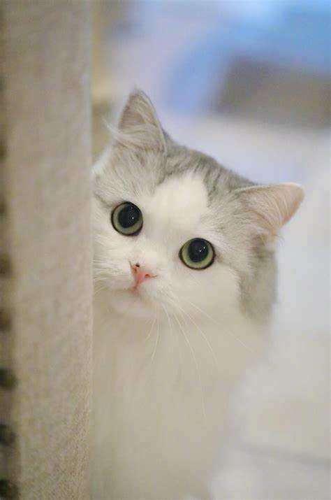

喵喵星球网
|  |
猫喜欢食肉，善于夜间活动，属于食肉性动物，犬齿十分发达，爪子也很锐利，善于捕捉小动物，在野处觅食的猫有时还会捕捉青蛙，也常吃粮食类的熟食。 猫的眼睛在黑暗的地方照样可以看清东西。听觉也特别灵，日常生活中凭听觉来注意察觉周围的动静、探知老鼠的活动地点。 猫捕鼠时注意力集中，严阵以待。家庭中的小猫在一定程度上同样保持着野猫昼伏夜出的习性。 猫每天要用爪子洗脸。并且每次都在固定的地方大小便，便后，都要用爪将粪便盖上。 猫喜欢清洁的习惯是人们愿意养猫的一个重要原因。 与其他的猫科动物一样，猫也有非常强的爬树倾向，即使在家里也喜欢爬上高处。 此外，猫出色的平衡力、柔软性，强大的爆发力，锋利的爪子和牙齿，都是捕猎者具备的特征。再者，脚步轻盈、体味不明显同样是猫的优势，可以避免猎物察觉。 |
|
|
猫咪习性 The Cat Behavior |
||
|
夜行性：“夜猫子”就是形容猫的夜行性的，猫经常会在夜间“蹦迪”，养猫的人要注意这点。
|
|
擅攀跃：大多数的猫对于都是跳跃的天生能力者，猫爪子的生理结构就表明了，这是一种极其擅长攀爬及跳跃的小可爱。
|

爱睡觉：猫的一天中，有一半以上的时间是在睡觉，特别是家猫，没有生存的担忧，每天只要吃喝玩乐即可。
|
| ————你不知道的猫咪习性———— | ||
| 没有养过猫的人很难想象猫的呼噜声有多大。当它趴在你的耳边睡觉时，你会感觉有拖拉机在耳边一直开，当然时间长了你会觉得这是最好的催眠曲，秒杀“小夜曲”“纯音乐”“白噪音”。猫的呼噜声是一种正常的生理现象，这个呼噜声大致上表达的意思是“我很舒服”“我很安全”，所以当你一开始撸猫，它就开始打呼噜，这证明，你的小猫咪是爱你的。反之，你需要思考自己哪里做的不好了。有一种说法是，猫的呼噜声对猫本身有一种治疗作用，对人也有一定的好处，这点虽然目前还没有科学依据，但据养猫经验丰富的人说，听着猫的呼噜声入睡，睡眠质量更好了。 | 这个即便是养猫的人也很少有人知道是为什么。给猫梳毛的时候会有不少毛发，用这些毛发搓成一个小球，猫咪最喜欢的玩具就是自己身上掉下来的毛球，没有之一。它们会叼着毛球到处乱走，然后你会鞋里找到这些小球；几乎所有的猫对于纸壳箱有着难以理解的热爱，平时网购的一些纸壳箱子可以留下来给猫玩，还能当猫抓板；不管是什么样的猫，其实它的性格都是很独立的，并不会呼之即来挥之即去，养猫的人其实也是最喜欢猫的这一点，猫需要主人的陪伴，但是也不会无限制的粘着主人，它会在有限的空间内找到自己的生活。 | |
| 首页 | 上一页 | 9 | 下一页 | 尾页 |
网页底部